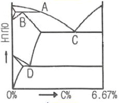
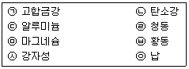
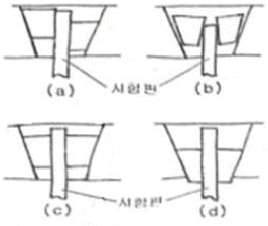

금속재료산업기사 (2015-09-19 기출문제)
1과목: 금속재료
1. 금속초미립자의 특성을 설명한 것 중 옳은 것은?
- Cr계 합금 초미립자는 빛을 잘 흡수한다.
- 활성이 강하여 화학반응을 일으키지 않는다.
- 저온에서 열저항이 매우 커 열의 부도체이다.
- 표면장력이 없으므로 내부에 기압이 없어 압력이 발생하지 않는다.
(정답률: 65%)

2. 다음 중 연질자성재료가 아닌 것은?
- 퍼멀로이
- 센더스트
- Si 강판
- 알니코 자석
(정답률: 59%)
3. 면심입방격자(FCC)는 단위격자 내에 몇 개의 원자가 존재하는가?
- 2개
- 4개
- 8개
- 12개
(정답률: 75%)
4. 탄소강에서 상온취성의 원인이 되는 원소는?
- 인(P)
- 규소(Si)
- 아연(Zn)
- 망간(Mn)
(정답률: 87%)
5. Al-Si계 합금에서 개량처리(modification)에 관한 설명 중 틀린 것은?
- 개량처리제로 알칼리 염류를 첨가한다.
- 개량처리제로 금속나트륨을 첨가한다.
- Si 결정을 미세화하기 위해 개량처리제를 첨가한다.
- Al 결정을 미세화하기 위해 개량처리제를 첨가한다.
(정답률: 52%)
6. 반도체에 빛을 조사하면 흡수나 여과된 캐리어(전자)에 의한 도전율의 변화가 생기는 현상은?
- 광전효과
- 표피효과
- 제백효과
- 흘피치효과
(정답률: 83%)
7. Ti에 대한 설명으로 틀린 것은?
- 내식성이 우수하다.
- 비강도(강도/중량)가 높다.
- 활성이 커서 고온산화가 잘된다.
- 면심입방정으로 소성변형에 제약이 없다.
(정답률: 66%)
8. 주철에 대한 설명으로 틀린 것은?
- 강에 비해 융점이 낮고 유동성이 좋다.
- 탄소함량 약 2.0%를 기준으로 강과 주철을 구분한다.
- 탄소당량(C.E)은 탄소(C), 망간(Mn)의 %에 의해 산출된다.
- 주철의 조직에 가장 큰 영향을 미치는 인자는 냉각속도와 화학성분이다.
(정답률: 59%)
9. 내적 외적 응력이 작용하고 있는 강을 염화물이나 알칼리용액 중에서 사용하면 국부적인 균열을 일으키고 결국은 파괴되는 현상인 응력부식균열을 일으키기 쉬운 스테인리스강은?
- 페라이트계
- 석출경화형
- 마텐자이트계
- 오스테나이트계
(정답률: 64%)
10. 순철의 변태에서 A3 A4 변태의 설면 중 틀린 것은?
- A3 변태점은 약 910℃ 이다.
- A4 변태점은 약 1400℃ 이다.
- A3, A4 변태는 순철의 동소변태이다.
- 가열시 A3 변태는 격자상수가 감소한다.
(정답률: 82%)
11. 46% Ni-Fe합금으로 열팽창계수 및 내식성에 있어 백금을 대용할 수 있어 전구봉입선등으로 사용 가능한 것은?
- 인바(Invar)
- 엘린바(Eilnva)
- 퍼멀로이(Pernalloy)
- 플레티나이트(Platinite)
(정답률: 70%)
12. 탄소 함유량이 가장 적은 것은?
- 암코철
- 아공석강
- 과공석강
- 과공정주철
(정답률: 71%)
13. 분말야금(powder metallurgy)의 특징이 옳지 않은 것은?
- 절삭공정을 생략할 수 있다.
- 다공질의 금속재료를 만들 수 있다.
- 제조과정에서 융점까지 온도를 올려야 한다.
- 융해법으로는 만들 수 없는 합금을 만들 수 있다.
(정답률: 72%)
14. 전연성이 매우 커서 약 10-6cm 두께의 박판 또는 1g을 2000m 선으로 가공할 수 있는 것은?
- Au
- Sn
- Ir
- Os
(정답률: 78%)
15. 황동에 10~20% Ni을 첨가한 것으로 탄성 및 내식성이 좋으므로 탄성재료나 화학기계용 재료에 사용되는 것은?
- 양은
- Y합금
- 텅갈로이
- 길딩메탈
(정답률: 67%)
16. 베어링 합금이 갖추어야 할 조건 중 틀린 것은?
- 열전도율이 클 것
- 마찰계수가 적을 것
- 소착에 대한 저항력이 작을 것
- 충분한 점성과 인성이 있을 것
(정답률: 75%)
17. 열간가공의 특징으로 틀린 것은?
- 재질이 균일화된다.
- 기공의 생성을 촉진시킨다.
- 강괴 내부의 미세균열이 엽착된다.
- 방향성이 있는 구조조직이 제거된다.
(정답률: 58%)
18. 베어링에 사용되는 동계 합금인 켈밋(kelmet)의 합금조성으로 옳은 것은?
- Cu-Co
- Cu-Pb
- Cu-Mg
- Cu- Si
(정답률: 74%)
19. 고탄소강에 Cr, Mo, V, Mn 등을 첨가한 냉간금형 합금강으로 담금질성이 좋고 열처리 변형이 적어 인발형, 냉간단조용형, 성형롤 등에 사용되는 합금계는?
- STS3
- STD11
- SKH51
- STD61
(정답률: 65%)
20. 고망간강의 일종인 해드필드 강(hadfield steel)의 설명으로 틀린 것은?
- 수인법을 이용한 강이다.
- 주요 조성은 0.9~1.4C%, 10~15Mn%이다.
- 열전도성이 좋고, 열팽창계수가 작아 열변형을 일으키지 않는다.
- 광석, 암석의 파쇄기 등 심한 충격과 마모를 받는 부품에 이용된다.
(정답률: 66%)
2과목: 금속조직
21. 동소변태에 대한 설명으로 틀린 것은?
- 자성의 변화가 일어난다.
- 결정구조의 변화가 일어난다.
- 원자배열의 변화가 일어난다.
- 급속히 비연속적으로 일어난다.
(정답률: 59%)
22. FE-C계 상태도에서 포정점에 해당하는 것은?

- A
- B
- C
- D
(정답률: 74%)
23. 강의 마텐자이트 변태에 대한 설명으로 옳은 것은?
- 면심입방격자이다.
- 무확산 과정이다.
- 원자의 협동운동에 의한 변태가 아니다.
- 변태량은 냉각온도의 영향을 받지 않는다.
(정답률: 80%)
24. 고용체합금의 시효경화를 위한 조건으로서 옳은 것은?
- 석출물이 기지조직과 부정합 상태이어야 한다.
- 고용체의 용해한도가 온도감소에 따라 급감해야 한다.
- 급냉에 의해 제 2상의 석출이 잘 이루어져야 한다.
- 기지상은 연성이 아닌 강성이며 석출물은 연한 상이어야 한다.
(정답률: 41%)
25. 입방정계에 속하는 금속이 응고할 때 결정이 성장하는 우선 방향은?
- [100]
- [110]
- [111]
- [123]
(정답률: 58%)
26. 순금속 내에서 동일 원자시에 일어나는 확산은?
- 자기확산
- 상호확산
- 입계확산
- 불순물확산
(정답률: 78%)
27. 다음 재 결정에 대한 설명으로 틀린 것은?
- 내부에 새로운 결정립의 핵이 발생한다.
- 고순도의 금속일수록 재결정하기가 어렵다.
- 가공 전의 결정립이 작을수록 재결정 완료후의 결정립은 작다.
- 석출물이나 이종원자가 존재하면 재결정의 진행이 방해된다.
(정답률: 66%)
28. 체심입방격자와 면심입방격자의 슬립면은?
- 체심임방격자 : (110), 면심입방격자 : (111)
- 체심임방격자 : (111), 면심입방격자 : (110)
- 체심임방격자 : (101), 면심입방격자 : (110)
- 체심임방격자 : (110), 면심입방격자 : (101)
(정답률: 70%)
29. 금속의 확산에서 확산속도가 빠른 것에서 늦은 순서로 옳은 것은?
- 입계확산＞표면확산＞격자확산
- 표면확산＞격자확산＞입계확산
- 격자확산＞입계확산＞표면확산
- 표면확산＞입계확산＞격자확산
(정답률: 75%)
30. 일정 압력하에서 깁스(Gibbs)의 상율(Phase rule)을 이용하면 응축계에서 3성분계의 자유도가 0일 때는 상이 몇 개 공존할 때인가?
- 2
- 3
- 4
- 5
(정답률: 45%)
31. 불규칙 상태의 고용체를 고온에서 천천히 냉각하면 어느 온도에서 규칙격자로 변화한다. 이 때 성질의 변화로 틀린 것은?
- 강도의 증가
- 연성의 증가
- 경도의 증가
- 전기전도도의 증가
(정답률: 63%)
32. 냉간가공된 금속을 풀림할 때 일어나는 3단계의 순서가 옳은 것은?
- 회복→재결정→결정립 성장
- 재결정→회복→결정립 성장
- 결정립 성장→재결정→회복
- 결정립 성장→회복→재결정
(정답률: 80%)
33. A원자와 B원자로 된 규칙격자 합금이 있다. A원자의 농도가 40%, B원자의 농도가 60% 이며, a격자상의 한 점을 A원자가 차지하는 확률이 0.79라고 한다면 A원자의 장범위 규칙도는?
- 0.40
- 0.48
- 0.51
- 0.65
(정답률: 35%)
34. Mn을 첨가하면 감소시킬 수 있는 취성은?
- 적열취성
- 저온취성
- 청열취성
- 뜨임취성
(정답률: 60%)
35. 금속의 소성변형을 일으키는 방법이 아닌 것은?
- 슬립변형
- 쌍정변형
- 킹크변형
- 탄성변형
(정답률: 68%)
36. 규칙격자의 분류에서 체심입방격자형의 AB형이 아닌 것은?
- CuAu
- CuZn
- FeAl
- AgCd
(정답률: 45%)
37. 1차원적인 격자결함으로서 결정격자 내에서 선을 중심으로 하여 그 주위에 격자의 뒤틀림을 일으키는 결함은?
- 전위
- 점결함
- 체적결함
- 계면결함
(정답률: 71%)
38. 다음 중 다각화(polygonization)와 관련 없는 것은?
- 킹크(kink)
- 회복(recovery)
- 서브결정(sub-grain)
- 칼날전위(edge dislocation)
(정답률: 41%)
39. 다음의 금속강화 방법 중 고온에서 효과가 가장 좋은 방법은?
- 급냉하여 강화시켰다.
- 압연가공하여 강화시켰다.
- 고용체를 석출시켜 강화시켰다.
- 고용원소를 고용시켜 강화시켰다.
(정답률: 48%)
40. Al-4% Cu 합금에서 석출강화처리 방법이 아닌 것은?
- 용체화처리
- 급랭처리
- 시효처리
- 심랭처리
(정답률: 43%)
3과목: 금속열처리
41. Al 합금 질별 기호 중 용체화 처리 후 안정화 처리한 것의 기호로 옳은 것은?
- T1
- T4
- T6
- T7
(정답률: 47%)
42. 탄소강(SM45C)을 마텐자이트조직으로 하기 위한 열처리 방법은?
- 뜨임(tempering)
- 담금질(quenchinh)
- 풀림(annealong)
- 물림(normalizing)
(정답률: 67%)
43. 상온 가공한 황동제품의 시기균열(season crack)을 방지하는 열처리는?
- 담금질
- 노멀라이징
- 저온 어닐링
- 고온탬퍼링
(정답률: 69%)
44. 재료를 오스테나이트화 한 후 코(nose) 구역을 통과 하도록 급냉하고 시험편의 내외가 동일 온도에 도달한 다음 적당한 방법으로 서성가공을 하여 공랭, 유랭 또는 수냉으로 마텐자이트 변태를 일으키는 것은?
- 수인법
- 파텐팅
- 제어압연
- Ms 담금질
(정답률: 48%)
45. 탄소강을 고온에서 열처리할 때 표면 산화나 탈탄이 발생한다. 이를 방지하기 위하여 조성하는 로 내의 분위기로 틀린 것은?
- 진공의 분위기
- Ar 가스 분위기
- 환원성 가스 분위기
- 산화성 가스 분위기
(정답률: 75%)
46. 열처리의 목적이 아닌 것은?
- 조직을 안정화시키기 위하여
- 내식성을 개선시키기 위하여
- 경도 또는 인창력을 증가시키기 위하여
- 조직을 조대화하고 방향성을 크게 하기 위하여
(정답률: 83%)
47. 강의 항온 열처리 중 오스테나이트 영역에서 냉각하여 Ms와 Mf 사이에서 행하는 항온처리로 오스테나이트의 일부는 마텐자이트가 되고 일부는 베이나이트의 혼합 조직이 되는 처리는?
- 스퍼터링
- 마템퍼링
- 오스포밍
- 오스템퍼링
(정답률: 54%)
48. 침탄깊이와 관련이 가장 적은 것은?
- 가열온도
- 유지시간
- 가열로의 종류
- 침탄제의 종류
(정답률: 80%)
49. 초심랭처리의 효과로 틀린 것은?
- 잔류응력이 증가한다.
- 내마멸성이 현저히 향상된다.
- 조직의 미세화와 미세 탄화물의 석출이 이루어진다.
- 잔류 오스테나이트가 대부분 마텐자이트로 변태한다.
(정답률: 67%)
50. 열처리 설비 제작 시 로 내부에 사용되는 재료가 아닌 것은?
- 열선
- 콘덴서
- 내화물
- 열전대
(정답률: 79%)
51. 변성로에서 그을음을 제거하기 위한 번아웃(burn out)작업 방법으로 틀린 것은?
- 원료가스의 송입을 중지한다.
- 변성로의 온도를 상용온도보다 약 580℃ 정도 낮춘다.
- 변성로에 변성 능력의 약 10% 정도의 공기를 송입한다.
- 변성로 내 가연성 가스가 없다고 판단될 때 공기 송입량을 늘린다.
(정답률: 65%)
52. 과공석강(1.5%)을 완전 풀림(full annealing)하였을 때 나타나는 조직은?
- 페라이트+층상 펄라이트
- 층상 펄라이트+스텔라이트
- 시멘타이트+층상 펄라이트
- 시멘타이트+구상 펄라이트
(정답률: 73%)
53. 인상담금질(Time Quenching)에서 인상시기에 대한 설명으로 틀린 것은?
- 가열물의 직경 또는 두께 3mm 당 1초 동안 수냉한 후 유냉 또는 공냉한다.
- 화색(化色)이 나타나지 않을 때까지 2배의 시간만큼 수냉한 후 공냉한다.
- 기름의 기포발생이 시작되었을 때 꺼내어 공냉한다.
- 가열물의 직경 또는 두께 1mm당 1초 동안 유냉한 후 공냉한다.
(정답률: 61%)
54. 금속 침투법 중에서 세라다이징에 사용되는 원소는?
- B
- Zn
- Al
- Cr
(정답률: 70%)
55. 냉각의 단계를 1~3단계로 나눌 때 시료가 냉각액의 증기에 감싸이는 단계로 냉각 속도가 극히 느린 단계는?
- 1단계
- 2단계
- 3단계
- 4단계
(정답률: 62%)
56. 마레이징강(maraging steel)의 열처리 방법에 대한 설명 중 옳은 것은?
- 580℃에서 1시간 유지하여 용체화 처리한 후 유냉 또는 로냉하여 마텐자이트화 한다.
- 1100℃에서 반드시 수냉 처리하여 오스테나이트를 미세하게 석출, 경화시킨다.
- 1100℃에서 1시간 유지하여 용체화 처리한 후 로냉하여 조직을 안정화시킨다.
- 850℃에서 1시간 유지하여 용체화 처리한 후 공냉 또는 수냉하여 480℃에서 3시간 시효처리한다.
(정답률: 57%)
57. 담금질 시에 가열온도가 높거나 가열유지 시간이 길어질 때 나타날 수 있는 대표적인 결함으로 적당한 것은?
- 결정립 조대화
- 결정립 미세화
- 경화도 증가
- 청열 취성
(정답률: 66%)
58. 열처리 온도측정에 사용되는 열전대(thermo couple) 온도계에 대한 설명 중 틀린 것은?
- 열전대는 2종의 금속을 접합하고 짧은 절연관을 넣어 그 위에 보호관을 씌워 사용한다.
- 열전대에 쓰이는 재료로는 내열, 내식성이 뛰어나고 고온에서도 기계적 강도가 커야한다.
- 열전대에 쓰이는 재료로는 열기전력이 크고 안정성이 있으며 히스테리시스 차가 없어야 한다.
- 보호관으로는 1000℃이하의 온도로 사용하는 비금속관(석영, 알루미나소결관)과 1000℃ 이상의 온도에 사용되는 금속관(고크롬강, 니켈크롬강)이 있다.
(정답률: 64%)
59. 강을 열처리할 때 냉각 방법의 3가지 형식 중 냉각 도중에 냉각 속도 변화를 위하여 공기 중에서 냉각하는 방법은?
- 2단 냉각
- 연속 냉각
- 항온 냉각
- 열욕 냉각
(정답률: 57%)
60. 펄라이트 가단주철의 제조방법으로 틀린 것은?
- 합금첨가에 의한 방법
- 열처리 곡선의 변화에 의한 방법
- 백심가단주철의 재열처리에 의한 방법
- 흑심가단주철의 재열처리에 의한 방법
(정답률: 58%)
4과목: 재료시험
61. 현미경 조직시험용 부식액 중 알루미늄 및 알루미늄합금에 적합한 시약의 명칭은?
- 왕수
- 질산알콩 용액
- 염화제2철 용액
- 수산화나트륨 용액
(정답률: 63%)
62. 일반적 재료시험을 정적 시험과 동적 시험방법으로 나눌 때 동적 시험 방법에 해당되는 것은?
- 압축 시험
- 충격 시험
- 전단 시험
- 비틀림 시험
(정답률: 75%)
63. 피로시험의 종류 중 시험편의 축방향에 인장 및 압축이 교대로 작용하는 시험은?
- 반복 굽힘 시험
- 반복 인장 압축 시험
- 반복 비틀림 시험
- 반복 응력 피로 시험
(정답률: 71%)
64. 철강제의 설퍼프린트 시험결과에서 황(S)편석의 분포가 강재의 중심부로부터 표면쪽으로 증가하여 나타나는 편석을 무엇이라고 하는가?
- 정편석(SN)
- 역편석(SI)
- 주상편석(SCO)
- 중심부편석(SC)
(정답률: 39%)
65. 마모시험편 제작 시 주의사항에 해당되지 않는 것은?
- 보관 시는 데시케이터를 사용한다.
- 시험편은 항상 열처리된 시험편만을 사용한다.
- 불필요한 표면 산화, 기름이나 물 등의 오염을 억제한다.
- 가공에 의한 잔류응력이나 표면 변질을 최대한 억제한다.
(정답률: 79%)
66. 다음 중 긴 시간을 필요로 하는 특수 시험은?
- 인장시험
- 압축시험
- 굽힘시험
- 크리프시험
(정답률: 86%)
67. 물질안전보건 제도에서 물리적 위험 물질 중 가연성 물질과 접촉하여 심한 발열 반응을 나타내는 물질은?
- 고독성 물질
- 산화성 물질
- 폭발성 물질
- 극인화성 물질
(정답률: 59%)
68. 재료의 연성을 파악하기 위하여 구리 및 알루미늄판재를 가압 성형하여 변형 능력을 시험하는 시험법은?
- 샤르피 시험
- 에릭션 시험
- 암슬러 시험
- 크리프 시험
(정답률: 81%)
69. 피로한도를 알기 위해 반복횟수와 응력과의 관계를 표시한 선도는?
- TTT곡선
- S-N 곡선
- Creep 곡선
- 항온변태 곡선
(정답률: 77%)
70. [보기]에서 자분탐상검사가 가능한 것들로 짝지어진 것은?

- ㉠, ㉡, ㉦
- ㉡, ㉢. ㉤
- ㉣, ㉤, ㉧
- ㉢, ㉣, ㉧
(정답률: 75%)
71. 내부결함을 검출하는 방법의 하나로 표면으로부터 피검사체의 깊이를 측정하는 데 가장 적합한 비파괴검사법은?
- 침투비파괴검사
- 자분비파괴검사
- 방사선비파괴검사
- 초음파비파괴검사
(정답률: 57%)
72. 탄소강의 불꽃시험에서 강재에 함유된 탄소량이 증가할 때 나타나는 불꽃의 특성으로 틀린 것은?
- 유선의 숫자가 증가한다.
- 파열의 숫자가 감소한다.
- 유선의 길이가 감소한다.
- 파열의 꽃잎모양이 복잡해진다.
(정답률: 65%)
73. 비커즈 경도 시험에 대한 설명으로 틀린 것은? (단, P는 하중, d는 평균 대각선의 길이이다.)
- HV = 1.8544 × (P/d2) 이다.
- 스크래치를 이용한 시험법이다.
- 시험편이 작고 경도가 높은 부분의 측정에 사용한다.
- 136° 다이아몬드 피라미드형 비커스 압입자를 사용한다.
(정답률: 65%)
74. 와전류탐상검사의 특징을 설명한 것 중 틀린 것은?
- 비전도체만을 검사할 수 있다.
- 고온부위의 시험체에도 탐상이 가능하다.
- 시험체에 비접촉으로 탐상이 가능하다.
- 시험체의 표층부에 있는 결함 검출을 대상으로 한다.
(정답률: 73%)
75. 금속재료의 인장시험에 의해 얻을 수 없는 것은?
- 연신율
- 내구한도
- 항복강도
- 단면수축율
(정답률: 57%)
76. 매크로(Macro)조직검사는 몇 배 이내의 배율로 확대하여 시험하는가?
- 10배
- 40배
- 100배
- 800배
(정답률: 71%)
77. 인장시험기에 시험편의 물림 상태가 가장 양호한 것은?

- (a)
- (b)
- (c)
- (d)
(정답률: 72%)
78. 탄소 3.5%를 함유하는 주철을 인장시험 하였더니 최대하중 7850kg에서 파단되었다. 이 시험결과 나타나는 파단면의 형태로 옳은 것은?
- 연성 파단면
- 취성 파단면
- 컴 모양 파단면
- 원추형 파단면
(정답률: 55%)
79. 브리넬 경도시험에서 지름 5mm의 강구누르개를 사용하여 시험하중 7.355kN(750kgf)에서 얻은 브리넬 경도치가 341인 경우 올바른 표시 방법은?
- HBD341
- HBW750
- HBD(5/341)750
- HBS(5/750)341
(정답률: 60%)
80. 금속 조직내의 상(相)의 양을 측정하는 방법에 해당하지 않는 것은?
- 면적 측정법
- 직선 측정법
- 점 측정법
- 원형 측정법
(정답률: 66%)